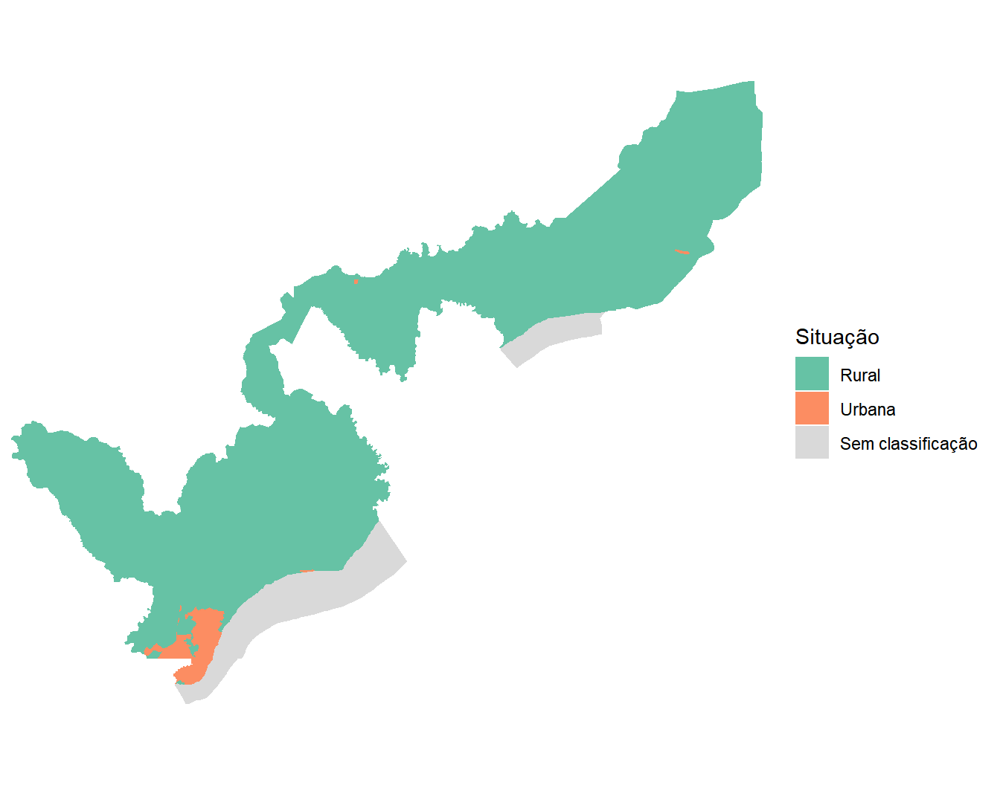
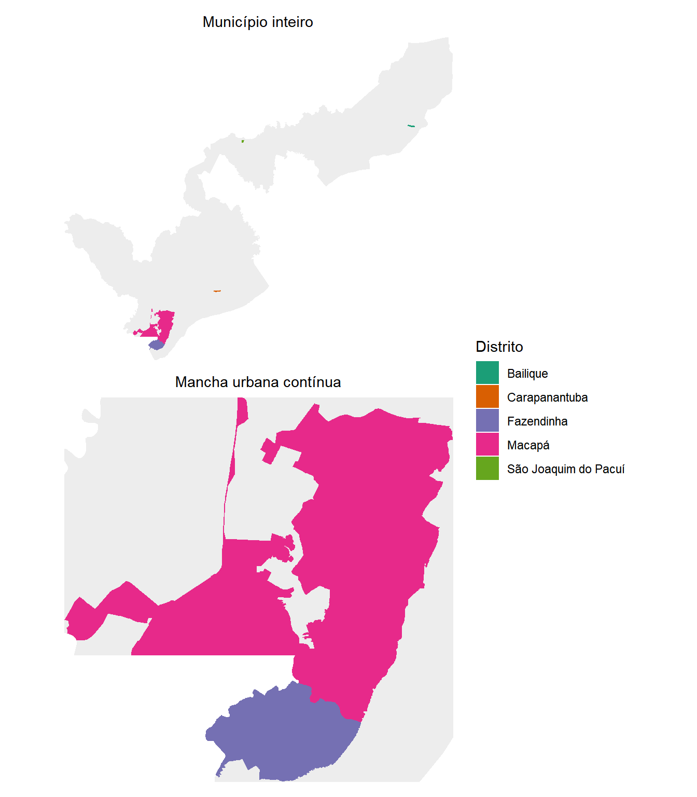
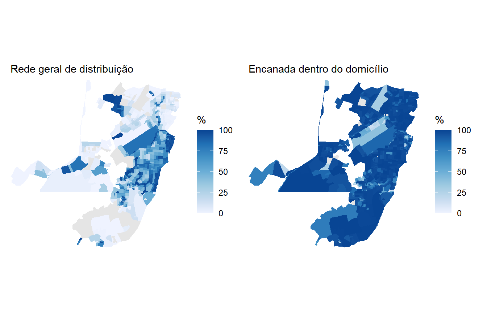
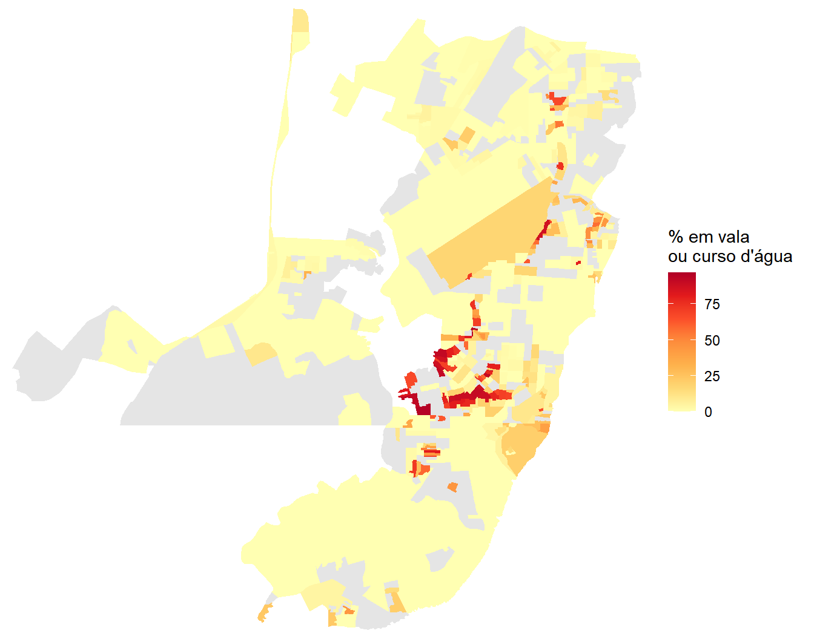
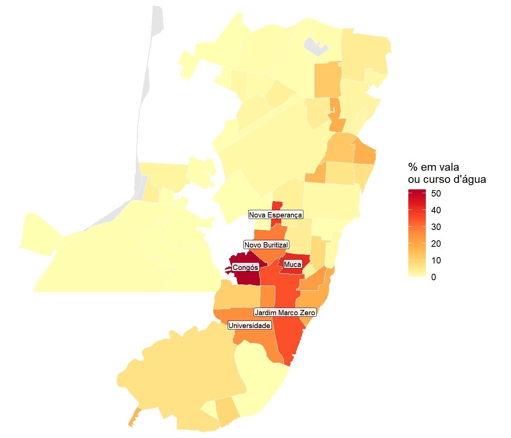
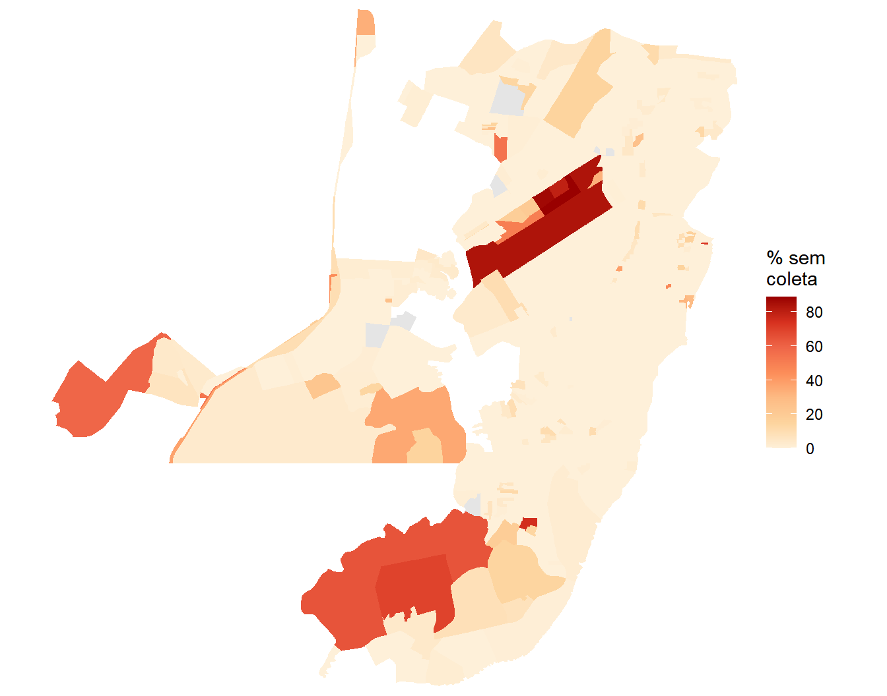
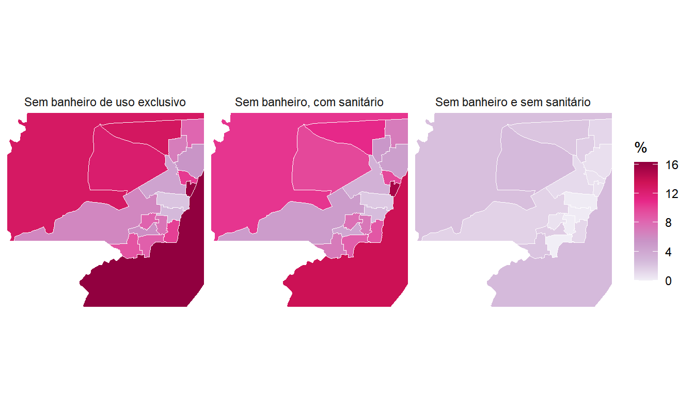
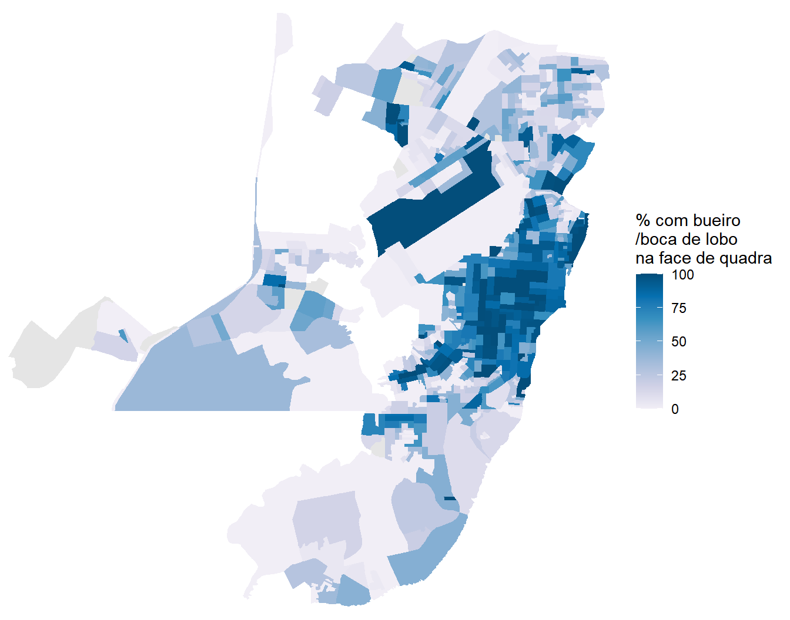

library(tidyverse)
library(censobr)
library(geobr)
library(sf)
library(srvyr)
library(patchwork)14 Saneamento e Drenagem Urbana
O Capítulo 7 mapeou cobertura de água e esgoto em Recife com dois indicadores binários, que respondiam se o domicílio estava ou não ligado à rede. Era o que aquele capítulo precisava, porque seu objetivo era ensinar a juntar arquivos temáticos dos agregados. Como diagnóstico de saneamento, aqueles dois indicadores são apenas o começo.
O que eles deixam de fora cabe em quatro perguntas, e é delas que este capítulo trata. Os domicílios estão ligados à rede geral de água e ela chega encanada até o seu interior? Qual a destinação do esgoto? Todo domicílio tem ao menos um banheiro? E a rua em frente ao domicílio tem por onde escoar a chuva?
Respondê-las exige três fontes. As características do domicílio vêm dos agregados por setor censitário, com um complemento dos microdados da amostra para o que o sigilo dos agregados esconde. A drenagem não está em nenhum dos dois, porque não é característica do domicílio e sim da via, e vem da Pesquisa Urbanística do Entorno dos Domicílios, apresentada no Capítulo 11.
O município escolhido é Macapá (AP), e a escolha não é arbitrária. Em junho de 2023, ao divulgar a publicação Características gerais dos domicílios e dos moradores 2022, da Pesquisa Nacional por Amostra de Domicílios Contínua, o IBGE apontou a região Norte como a de menor acesso à rede geral de esgoto do país. No detalhamento por unidade da federação, o Amapá aparece na última posição, com menos de 30% dos domicílios urbanos conectados.
Comecemos carregando os pacotes usados ao longo do capítulo1.
14.1 Estruturação dos dados de agregados do Censo de 2022
Macapá tem o mesmo problema de escala territorial que vimos para Goiânia, no Capítulo 12, sobre Demografia. O município é grande e majoritariamente rural, enquanto a população se concentra numa mancha urbana pequena. Deste modo, recortaremos Macapá a uma situação rural bem específica, conforme explicaremos logo mais. Antes de prosseguir, vamos obter o código IBGE do município para a sua leitura:
macapa <- lookup_muni(name_muni = "Macapá", year = 2022)$code_muni
macapa[1] 1600303Como se sabe, o arquivo Básico traz a coluna situacao, que classifica cada setor entre urbano e rural. Abaixo, após a leitura dos setores, podemos verifcar a distribuição da tipologia, seja por quantidade quanto por sua extensão territorial:
basico <- read_tracts(dataset = "Basico", year = 2022) |>
filter(code_muni == macapa) |>
select(code_tract, name_neighborhood, name_district, situacao,
code_type, area_km2, V0001, V0007) |>
collect()
basico |>
group_by(situacao) |>
summarize(
setores = n(),
populacao = sum(V0001, na.rm = TRUE),
area_km2 = sum(area_km2, na.rm = TRUE)
) |>
knitr::kable(digits = 0, format.args = list(big.mark = ".", decimal.mark = ","))| situacao | setores | populacao | area_km2 |
|---|---|---|---|
| Rural | 112 | 24.133 | 5.752 |
| Urbana | 659 | 418.800 | 149 |
| NA | 5 | 0 | 662 |
Veja como a mancha urbana concentra a quase totalidade da população em cerca de 2,5% da área do município. Vale levar essa mesma informação ao mapa, porque a tabela diz quanto e o mapa diz onde. Antes, vamos ler as geometrias dos setores com read_census_tract() e uni-las ao arquivo Básico, guardando o resultado em setores_geo, que será reaproveitado em todos os mapas do capítulo:
setores_geo <- read_census_tract(
code_tract = macapa,
year = 2022,
simplified = FALSE
) |>
select(code_tract) |>
left_join(basico, by = "code_tract")Produzindo então um mapa coroplético cuja cor de preenchimento é baseada no tipo de setor, temos:
ggplot(setores_geo) +
geom_sf(aes(fill = situacao), color = NA) +
scale_fill_brewer(palette = "Set2", name = "Situação", na.value = "gray85",
labels = c("Rural", "Urbana", "Sem classificação")) +
coord_sf(expand = FALSE) +
theme_minimal() +
theme(axis.text = element_blank(), axis.ticks = element_blank(),
panel.grid = element_blank())
Repare como em Macapá aparecem algumas manchas urbanas (alaranjadas) em volta de áreas rurais (verdes). É importante lembrar que a classificação de urbano no Censo é funcional e não espacial. Ela diz que o setor tem características urbanas, e não que ele pertence à cidade. Sedes de vila e povoados afastados também são classificados como urbanos, ainda que fiquem bem distantes da mancha contínua. Basta um deles para obrigar o mapa a enquadrar o município inteiro e perdermos a capacidade de visualizar bem os setores onde está a maior parte da população.
NotaOs setores com
NA estão sobre o Rio Amazonas
Note que temos cinco setores de dimensão considerável sem classificação urbana ou rural (NA). Observe abaixo com o mapa interativo via mapview() que eles estão sobre o Rio Amazonas, que banha o município:
library(mapview)
mapview(setores_geo, legend = NULL, alpha.regions = 0.001)Voltando à questão dos povoados afastados, a verificação é simples e se faz olhando a distribuição dos setores urbanos entre os distritos:
basico |>
filter(situacao == "Urbana") |>
group_by(name_district) |>
summarize(setores = n(), populacao = sum(V0001, na.rm = TRUE)) |>
arrange(desc(setores)) |>
knitr::kable(format.args = list(big.mark = ".", decimal.mark = ","))| name_district | setores | populacao |
|---|---|---|
| Macapá | 631 | 398.490 |
| Fazendinha | 24 | 17.933 |
| Bailique | 2 | 1.337 |
| Carapanantuba | 1 | 200 |
| São Joaquim do Pacuí | 1 | 840 |
Os distritos de Macapá e Fazendinha formam a mancha urbana contínua da cidade e concentram mais de 99% da população urbana. Os outros três aparecem com pouquíssimos setores, que são sedes de vila isoladas, entre elas o arquipélago do Bailique, a cerca de cem quilômetros da capital.
Observemos no mapa para deixar o argumento visível. Na parte superior, os setores urbanos coloridos por distrito sobre o município inteiro, desenhado em cinza claro. Embaixo, o mesmo mapa recortado na mancha urbana contínua, o que exige apenas informar ao coord_sf() os limites desejados nos argumentos xlim e ylim. Esses limites saem do próprio dado, com a caixa delimitadora, dada por st_bbox(), aplicada aos setores dos dois distritos centrais:
urbanos_geo <- setores_geo |>
filter(situacao == "Urbana")
recorte <- urbanos_geo |>
filter(name_district %in% c("Macapá", "Fazendinha")) |>
st_bbox()
mapa_municipio <- ggplot() +
geom_sf(data = setores_geo, fill = "gray93", color = NA) +
geom_sf(data = urbanos_geo, aes(fill = name_district),
color = NA) +
scale_fill_brewer(palette = "Dark2", name = "Distrito") +
coord_sf(expand = FALSE) +
labs(subtitle = "Município inteiro") +
theme_minimal() +
theme(axis.text = element_blank(), axis.ticks = element_blank(),
panel.grid = element_blank(),
plot.subtitle = element_text(hjust = 0.5))
mapa_mancha <- ggplot() +
geom_sf(data = setores_geo, fill = "gray93", color = NA) +
geom_sf(data = urbanos_geo, aes(fill = name_district),
color = NA) +
scale_fill_brewer(palette = "Dark2", name = "Distrito") +
coord_sf(xlim = recorte[c("xmin", "xmax")],
ylim = recorte[c("ymin", "ymax")], expand = FALSE) +
labs(subtitle = "Mancha urbana contínua") +
theme_minimal() +
theme(axis.text = element_blank(), axis.ticks = element_blank(),
plot.subtitle = element_text(hjust = 0.5),
panel.grid = element_blank())
(mapa_municipio / mapa_mancha) +
plot_layout(guides = "collect")
No painel de cima, os setores de Bailique, Carapanantuba e São Joaquim do Pacuí são manchas minúsculas espalhadas pelo município, e são elas que obrigam o enquadramento a ir do extremo norte ao extremo sul. No painel de baixo, com o recorte aplicado, aparecem os dois distritos que interessam e a subdivisão fina dos seus setores, com Macapá ocupando toda a porção norte e Fazendinha o prolongamento ao sul.
É importante destacar que restringiremos todas as análises planejadas com os agregados deste capítulo a esses dois distritos:
setores_urbanos <- basico |>
filter(situacao == "Urbana",
name_district %in% c("Macapá", "Fazendinha")) |>
pull(code_tract)
length(setores_urbanos)[1] 655Essa exclusão custa pouco mais de dois mil moradores e devolve um mapa legível. Vale registrar que ela é uma decisão de recorte, e que uma análise voltada às comunidades mais afastadas do município faria exatamente o contrário, mantendo esses setores e descartando a cidade.
Façamos então a leitura do arquivo Domicílio, de onde vêm todas as variáveis de saneamento. São trinta e duas colunas, distribuídas em sete blocos, e a Tabela 14.3 descreve cada um deles. Para selecioná-las sem escrever nome por nome, usamos a num_range(), apresentada no Capítulo 12, com o cuidado do argumento width:
| Bloco | Códigos | Categorias |
|---|---|---|
| Forma de abastecimento de água | V00111 a V00118 |
8 |
| Como a água chega ao domicílio | V00199 a V00201 |
3 |
| Instalação sanitária disponível | V00232 a V00238 |
7 |
| Destinação do esgoto | V00309 a V00316 |
8 |
| Destinação do lixo | V00397 a V00402 |
6 |
| Água da rede por cor ou raça | V00143 a V00147 |
5 |
| Esgoto por rede por cor ou raça | V00341 a V00345 |
5 |
A leitura seleciona os sete blocos de uma vez, e a restrição aos setores urbanos vem logo em seguida, na construção de macapa_sc.
domicilio <- read_tracts(dataset = "Domicilio", year = 2022) |>
filter(code_muni == macapa) |>
select(code_tract, domicilio01_V00001,
num_range("domicilio02_V00", 111:118, width = 3),
num_range("domicilio02_V00", 199:201, width = 3),
num_range("domicilio02_V00", 232:238, width = 3),
num_range("domicilio02_V00", 309:316, width = 3),
num_range("domicilio02_V00", 397:402, width = 3),
num_range("domicilio02_V00", 143:147, width = 3),
num_range("domicilio02_V00", 341:345, width = 3)) |>
collect()
macapa_sc <- basico |>
filter(code_tract %in% setores_urbanos) |>
left_join(domicilio, by = "code_tract")
dpp <- sum(macapa_sc$domicilio01_V00001, na.rm = TRUE)
dpp[1] 116576Esse total de domicílios particulares permanentes ocupados será o denominador de quase todos os indicadores do capítulo. Como usaremos a mesma conta muitas vezes, guardamos o valor em um objeto em vez de repeti-lo.
14.2 O que é saneamento adequado
Antes de calcular qualquer coisa, é preciso definir o que conta como adequado. O critério que adotamos aqui vem do Índice de Vulnerabilidade Social (IVS), construído pelo Ipea e divulgado no Atlas da Vulnerabilidade Social (Costa & Marguti, 2015). O IVS busca medir a ausência ou a insuficiência de um conjunto de ativos considerados essenciais ao bem-estar, e se organiza em três dimensões, que são infraestrutura urbana, capital humano, e renda e trabalho.
A dimensão de Infraestrutura Urbana reflete as condições de acesso aos serviços de saneamento básico e de mobilidade urbana, e é composta por três indicadores. Dois deles interessam diretamente a este capítulo, que são o percentual de pessoas em domicílios com abastecimento de água e esgotamento sanitário inadequados e o percentual de pessoas em domicílios urbanos sem coleta de lixo. O terceiro trata do tempo de deslocamento de trabalhadores de baixa renda, e é assunto do Capítulo 15.
AvisoO IVS entra como critério, e não como índice calculado
Este livro usa o IVS para definir o que conta como adequado, e não reproduz o índice. Além disso, o índice oficial é calculado por município e por unidade de desenvolvimento humano, e não por setor censitário.
O que fazemos é bem mais modesto e bem mais seguro. Tomamos emprestadas as definições de adequação e calculamos os indicadores que os agregados permitem, deixando claro em cada caso qual é o numerador e qual é o denominador.
Segundo o critério do IVS, o abastecimento de água é inadequado quando não provém de rede geral, e o esgotamento sanitário é inadequado quando não é feito por rede coletora nem por fossa séptica ligada à rede. Traduzidas para as variáveis dos agregados, as duas definições produzem os indicadores a seguir:
macapa_sc <- macapa_sc |>
mutate(
dom = domicilio01_V00001,
redger_a = domicilio02_V00111,
redger_e = domicilio02_V00309,
fossa_s = domicilio02_V00310,
perc_agua_inadeq = 100 * (1 - redger_a / dom),
perc_esg_inadeq = 100 * (1 - (redger_e + fossa_s) / dom)
)
macapa_sc |>
summarize(
agua_inadequada = 100 * (1 - sum(redger_a, na.rm = TRUE) / dpp),
esgoto_inadequado = 100 * (1 - (sum(redger_e, na.rm = TRUE) +
sum(fossa_s, na.rm = TRUE)) / dpp)
) agua_inadequada esgoto_inadequado
1 54.55497 82.49211Veja que mais da metade dos domicílios das áreas urbanas que selecionamos de Macapá tem abastecimento inadequado pelo critério do IVS, em 2022, e cerca de oito em cada dez têm esgotamento inadequado. Os dois números são altos, e o restante do capítulo se dedica a mostrar as nuances que eles escondem.
14.3 Distribuição de Água
O indicador binário diz que pouco menos da metade dos domicílios usa a rede geral. Vamos entender melhor, então, de onde vem a maior parte da distribuição de água em Macapá. Abaixo, nós fazemos a codificação dos valores das variáveis dos agregados para atingir esse objetivo:
formas_agua <- tibble(
Forma = c("Rede geral de distribuição", "Poço profundo ou artesiano",
"Poço raso, freático ou cacimba", "Fonte, nascente ou mina",
"Carro-pipa", "Água da chuva armazenada",
"Rios, açudes, córregos, lagos e igarapés", "Outra forma"),
variavel = sprintf("domicilio02_V00%d", 111:118)
)
formas_agua# A tibble: 8 × 2
Forma variavel
<chr> <chr>
1 Rede geral de distribuição domicilio02_V00111
2 Poço profundo ou artesiano domicilio02_V00112
3 Poço raso, freático ou cacimba domicilio02_V00113
4 Fonte, nascente ou mina domicilio02_V00114
5 Carro-pipa domicilio02_V00115
6 Água da chuva armazenada domicilio02_V00116
7 Rios, açudes, córregos, lagos e igarapés domicilio02_V00117
8 Outra forma domicilio02_V00118Na sequência, obtemos os totais e percentuais para cada um dos tipos:
formas_agua |>
mutate(
Domicílios = map_dbl(variavel, \(v) sum(macapa_sc[[v]], na.rm = TRUE)),
`%` = 100 * Domicílios / dpp
) |>
select(-variavel) |>
knitr::kable(digits = 1, format.args = list(big.mark = ".", decimal.mark = ","))| Forma | Domicílios | % |
|---|---|---|
| Rede geral de distribuição | 52.978 | 45,4 |
| Poço profundo ou artesiano | 41.376 | 35,5 |
| Poço raso, freático ou cacimba | 20.354 | 17,5 |
| Fonte, nascente ou mina | 84 | 0,1 |
| Carro-pipa | 21 | 0,0 |
| Água da chuva armazenada | 3 | 0,0 |
| Rios, açudes, córregos, lagos e igarapés | 129 | 0,1 |
| Outra forma | 1.097 | 0,9 |
Nota
map_dbl() para percorrer nomes de colunas
A função map_dbl(), do pacote purrr, aplica uma função a cada elemento de um vetor e devolve o resultado como vetor numérico. O nome descreve o que ela faz, porque map é a operação de mapear elemento a elemento e dbl é o tipo devolvido, o double. Ela tem irmãs para cada tipo de retorno, entre elas a map_int(), que devolve inteiros e será usada mais adiante, e a map_chr(), que devolve texto.
O que a torna útil aqui é o formato da tabela que estamos montando. A coluna variavel guarda nomes de colunas em texto, e não os valores em si. Precisamos, para cada um desses oito nomes, somar a coluna correspondente de macapa_sc. É exatamente esse o desenho da map_dbl(), que recebe o vetor de nomes e a operação a aplicar em cada um.
map_dbl(variavel, \(v) sum(macapa_sc[[v]], na.rm = TRUE))A função anônima \(v), na forma abreviada apresentada na Seção 11.4, recebe um nome de cada vez na variável v. Os colchetes duplos, vistos no Capítulo 1, extraem de macapa_sc a coluna cujo nome está guardado em v, e não uma coluna chamada literalmente v. Sem essa construção, seria preciso escrever oito linhas de sum(), uma para cada variável, e repeti-las em cada uma das tabelas seguintes.
Vale registrar que a map_dbl() exige que cada aplicação devolva um único valor numérico. Se a função devolvesse dois valores, ou um texto, a chamada falharia com erro em vez de devolver um resultado silenciosamente errado. Essa rigidez é uma vantagem, porque avisa cedo quando o cálculo não é o que se imaginava.
Observe que a alternativa dominante à rede geral em Macapá não é a precariedade extrema, e sim o poço, profundo ou raso, que atende mais da metade dos domicílios. É importante destacar que poço não é necessariamente sinônimo de água insegura, embora seja fonte sem tratamento e sem monitoramento regular.
Há ainda uma segunda pergunta que o indicador binário não alcança. Estar ligado a alguma fonte não é o mesmo que ter água chegando dentro de casa, e quesitos adicionais dos agregados nos permitem responder a essa pergunta:
tibble(
Situação = c("Encanada até dentro do domicílio",
"Encanada, mas apenas no terreno",
"Não chega encanada"),
variavel = sprintf("domicilio02_V00%d", 199:201)
) |>
mutate(
Domicílios = map_dbl(variavel, \(v) sum(macapa_sc[[v]], na.rm = TRUE)),
`%` = 100 * Domicílios / dpp
) |>
select(-variavel) |>
knitr::kable(digits = 1, format.args = list(big.mark = ".", decimal.mark = ","))| Situação | Domicílios | % |
|---|---|---|
| Encanada até dentro do domicílio | 106.061 | 91,0 |
| Encanada, mas apenas no terreno | 8.852 | 7,6 |
| Não chega encanada | 1.221 | 1,0 |
Nove em cada dez domicílios têm água encanada até dentro de casa, contra menos da metade ligados à rede geral. Antes de interpretar a diferença, é preciso reconhecer o que as duas tabelas são. As duas trazem distribuições separadas do mesmo conjunto de domicílios, e não um cruzamento entre as duas perguntas. Nenhuma delas informa, domicílio a domicílio, quem está em cada combinação, de modo que os agregados não permitem calcular quantos dos ligados à rede têm água dentro de casa.
Por fim, mapeamos abaixo a situação dos setores tanto quanto ao fato de a água chegar via rede geral quanto ao fato de ser encanada, chegando até dentro do domicílio:
macapa_geo <- setores_geo |>
select(code_tract) |>
inner_join(macapa_sc, by = "code_tract") |>
mutate(
perc_rede_agua = 100 * redger_a / dom,
perc_encanada = 100 * domicilio02_V00199 / dom
)
mapa_rede <- ggplot(macapa_geo) +
geom_sf(aes(fill = perc_rede_agua), color = NA) +
scale_fill_distiller(palette = "Blues", direction = 1,
name = "%", na.value = "gray90", limits = c(0, 100)) +
coord_sf(expand = FALSE) +
labs(subtitle = "Rede geral de distribuição") +
theme_minimal() +
theme(axis.text = element_blank(), axis.ticks = element_blank(),
panel.grid = element_blank())
mapa_encanada <- ggplot(macapa_geo) +
geom_sf(aes(fill = perc_encanada), color = NA) +
scale_fill_distiller(palette = "Blues", direction = 1,
name = "%", na.value = "gray90", limits = c(0, 100)) +
coord_sf(expand = FALSE) +
labs(subtitle = "Encanada dentro do domicílio") +
theme_minimal() +
theme(axis.text = element_blank(), axis.ticks = element_blank(),
panel.grid = element_blank())
mapa_rede + mapa_encanada
As duas escalas vão de zero a cem, de propósito, para que a comparação seja direta. O mapa da direita é quase todo escuro e o da esquerda é irregular, o que confirma no território o que a tabela mostrou.
14.4 Esgotamento Sanitário
Se o abastecimento de água adequado já apresenta cobertura baixa em Macapá, o esgotamento sanitário está em situação ainda mais desfavorável. O questionário do Censo registra oito destinações, e olhá-las em sequência revela um gradiente que vai do adequado ao insalubre.
Observemos o quantitativo em cada um dos casos:
esgoto <- tibble(
Destinação = c("Rede geral ou pluvial", "Fossa séptica ou filtro ligada à rede",
"Fossa séptica ou filtro não ligada à rede",
"Fossa rudimentar ou buraco", "Vala",
"Rio, lago, córrego ou mar", "Outra forma",
"Não tinha banheiro nem sanitário"),
variavel = sprintf("domicilio02_V00%d", 309:316)
) |>
mutate(
Domicílios = map_dbl(variavel, \(v) sum(macapa_sc[[v]], na.rm = TRUE)),
`%` = 100 * Domicílios / dpp
) |>
select(-variavel)
esgoto |>
knitr::kable(digits = 1, format.args = list(big.mark = ".", decimal.mark = ","))| Destinação | Domicílios | % |
|---|---|---|
| Rede geral ou pluvial | 15.938 | 13,7 |
| Fossa séptica ou filtro ligada à rede | 4.472 | 3,8 |
| Fossa séptica ou filtro não ligada à rede | 48.259 | 41,4 |
| Fossa rudimentar ou buraco | 32.314 | 27,7 |
| Vala | 1.384 | 1,2 |
| Rio, lago, córrego ou mar | 12.517 | 10,7 |
| Outra forma | 560 | 0,5 |
| Não tinha banheiro nem sanitário | 44 | 0,0 |
O corte binário do Capítulo 7 juntaria as duas primeiras linhas de um lado e as seis restantes do outro. O gradiente mostra por que isso é insuficiente. A destinação mais frequente em Macapá é a fossa séptica ou filtro não ligada à rede, seguida da fossa rudimentar, e as duas juntas respondem por cerca de sete em cada dez domicílios. Vale salientar que, em ambos os casos, o efluente termina infiltrado no solo, porque a fossa séptica não ligada à rede tem como destino final o sumidouro ou a vala de infiltração, enquanto a rudimentar acumula as duas funções em um único buraco escavado. Como nem o tanque séptico nem os pós-tratamentos previstos nas normas brasileiras removem nitrogênio, o principal impacto é a contaminação do solo e do lençol freático por patógenos e nitrato (Figueiredo et al., 2019), risco que a falta de manutenção e a instalação em local inadequado agravam, e que pesa mais em uma cidade onde metade dos domicílios se abastece por poço.
O que mais chama atenção, entretanto, é a sexta linha. Um em cada dez domicílios urbanos de Macapá lançava esgoto diretamente em rio, lago, córrego ou mar. Levado ao mapa, observe que este aspecto não se distribui no território de maneira uniforme:
macapa_geo <- macapa_geo |>
mutate(
perc_curso_agua = 100 * (domicilio02_V00313 + domicilio02_V00314) / dom
)
ggplot(macapa_geo) +
geom_sf(aes(fill = perc_curso_agua), color = NA) +
scale_fill_distiller(palette = "YlOrRd", direction = 1,
name = "% em vala\nou curso d'água",
na.value = "gray90") +
coord_sf(expand = FALSE) +
theme_minimal() +
theme(axis.text = element_blank(), axis.ticks = element_blank(),
panel.grid = element_blank())
A concentração é evidente em algumas áreas. Agregando por bairro, é possível nomeá-las.
## Produzindo os indicadores por bairro:
bairros <- macapa_sc |>
filter(!is.na(name_neighborhood)) |>
group_by(name_neighborhood) |>
summarize(
dom = sum(dom, na.rm = TRUE),
rede = sum(redger_e, na.rm = TRUE),
vala = sum(domicilio02_V00313, na.rm = TRUE),
curso = sum(domicilio02_V00314, na.rm = TRUE)
) |>
filter(dom >= 100) |>
mutate(
perc_rede = 100 * rede / dom,
perc_curso_agua = 100 * (vala + curso) / dom
)
bairros |>
slice_max(perc_curso_agua, n = 6) |>
select(name_neighborhood, dom, perc_curso_agua, perc_rede) |>
knitr::kable(
col.names = c("Bairro", "Domicílios", "% em vala ou curso d'água", "% com rede geral"),
digits = 1,
format.args = list(big.mark = ".", decimal.mark = ",")
)| Bairro | Domicílios | % em vala ou curso d’água | % com rede geral |
|---|---|---|---|
| Congós | 4.856 | 52,0 | 1,3 |
| Muca | 3.177 | 41,3 | 2,7 |
| Nova Esperança | 1.027 | 38,8 | 0,0 |
| Jardim Marco Zero | 4.770 | 34,4 | 2,8 |
| Novo Buritizal | 6.620 | 28,7 | 14,8 |
| Universidade | 4.440 | 25,7 | 2,1 |
Em alguns bairros, mais de um terço dos domicílios lança esgoto em vala ou curso d’água, e a coluna da direita mostra que são exatamente os bairros a que a rede não chegou.
A tabela nomeia os bairros, e o mapa diz onde eles ficam. No Capítulo 13, buscamos a malha de bairros no geobr, com a read_neighborhood(), mas aqui faremos por um caminho diferente para fins didáticos. Observe que o arquivo de setores já vem com uma coluna name_neighborhood e, sendo assim, basta dissolvê-los por bairro com a combinação group_by() e summarize() que apresentamos no Capítulo 5, escrevendo o st_union() de forma explícita e passando antes pela st_make_valid() para ajustar geometrias inválidas:
## Produzindo a geometria por bairros a partir do arquivo original e juntando
## ao arquivo bairros com os indicadores produzido anteriormente:
bairros_mapa <- macapa_geo |>
filter(!is.na(name_neighborhood)) |>
st_make_valid() |>
group_by(name_neighborhood) |>
summarize(geometry = st_union(geometry)) |>
left_join(bairros, by = "name_neighborhood")
## Selecionando os 6 piores casos para trazer o rótulo no mapa
destaques <- bairros_mapa |>
slice_max(perc_curso_agua, n = 6)
## Plotando o mapa:
ggplot(bairros_mapa) +
geom_sf(aes(fill = perc_curso_agua), color = "white", linewidth = 0.2) +
geom_sf_label(data = destaques, aes(label = name_neighborhood),
size = 2.5, alpha = 0.85,
label.padding = unit(0.12, "lines")) +
scale_fill_distiller(palette = "YlOrRd", direction = 1,
name = "% em vala\nou curso d'água",
na.value = "gray90") +
coord_sf(expand = FALSE) +
labs(x = NULL, y = NULL) +
theme_minimal() +
theme(axis.text = element_blank(), axis.ticks = element_blank(),
panel.grid = element_blank())
O contraste com o resto da cidade é grande. A mediana dos 59 bairros analisados fica em 2,4%, e 44 deles não chegam a 10%, de modo que o lançamento em vala ou curso d’água é fenômeno de poucos lugares, e não uma condição difusa de Macapá.
Esses lugares ocupam uma faixa central da mancha urbana. Nenhum dos sete bairros acima de 20% está na porção norte da cidade nem em sua borda oeste, e os seis destacados formam um bloco contínuo, em que cada um faz fronteira com ao menos um dos demais. O único bairro em cinza, Bella Ville, ficou abaixo do corte de cem domicílios e por isso não entrou na tabela.
14.5 Coleta de lixo
O terceiro componente do saneamento básico é o resíduo sólido, e é também o segundo indicador da dimensão de Infraestrutura Urbana do IVS. Vamos entender as condições a partir da codificação fornecida pelos agregados:
tibble(
Destinação = c("Coletado no domicílio por serviço de limpeza",
"Depositado em caçamba de serviço de limpeza",
"Queimado na propriedade", "Enterrado na propriedade",
"Jogado em terreno baldio, encosta ou área pública",
"Outro destino"),
variavel = sprintf("domicilio02_V00%d", 397:402)
) |>
mutate(
Domicílios = map_dbl(variavel, \(v) sum(macapa_sc[[v]], na.rm = TRUE)),
`%` = 100 * Domicílios / dpp
) |>
select(-variavel) |>
knitr::kable(digits = 1, format.args = list(big.mark = ".", decimal.mark = ","))| Destinação | Domicílios | % |
|---|---|---|
| Coletado no domicílio por serviço de limpeza | 105.991 | 90,9 |
| Depositado em caçamba de serviço de limpeza | 7.391 | 6,3 |
| Queimado na propriedade | 1.115 | 1,0 |
| Enterrado na propriedade | 7 | 0,0 |
| Jogado em terreno baldio, encosta ou área pública | 712 | 0,6 |
| Outro destino | 924 | 0,8 |
Observe que a situação se apresenta bem mais favorável em relação à distribuição de água e esgotamento. A coleta de lixo alcança nove em cada dez domicílios urbanos, e somando a caçamba de serviço de limpeza chega-se a mais de 97%. São essas duas formas, a coleta no domicílio e a caçamba do serviço de limpeza, que o IVS considera atendimento adequado nessa dimensão.
Note que o indicador do IVS é o complemento dessas duas primeiras linhas, ou seja, os domicílios que não contam com nenhuma das duas formas de coleta. Ele corresponde exatamente às quatro linhas restantes da tabela, que são o lixo queimado, o enterrado, o jogado em terreno baldio e o de outro destino.
Poderíamos calculá-lo subtraindo as duas primeiras linhas do total, mas é melhor somar as quatro últimas. O motivo é o sigilo, já que a caçamba tem valor suprimido em 151 dos 655 setores, e qualquer conta que a use arrasta essa ausência para o resultado, deixando quase um quarto do mapa em cinza. Somando as quatro categorias de destinação inadequada com rowSums() e across(), apresentadas no Capítulo 11, restam apenas sete setores sem informação. O na.rm = TRUE trata as células suprimidas como zero, o que subestima o indicador de forma conhecida e pequena, já que o total municipal passa de 2,7% para 2,4%. Observemos o resultado com o mapa abaixo:
macapa_geo <- macapa_geo |>
mutate(
perc_sem_coleta = 100 * rowSums(
across(num_range("domicilio02_V00", 399:402, width = 3)),
na.rm = TRUE
) / dom
)
ggplot(macapa_geo) +
geom_sf(aes(fill = perc_sem_coleta), color = NA) +
scale_fill_distiller(palette = "OrRd", direction = 1,
name = "% sem\ncoleta", na.value = "gray90") +
coord_sf(expand = FALSE) +
theme_minimal() +
theme(axis.text = element_blank(), axis.ticks = element_blank(),
panel.grid = element_blank())
Note que o déficit é bastante concentrado. Em 530 dos 655 setores urbanos o indicador é exatamente zero, e apenas 24 passam de um quarto dos domicílios. As manchas escuras são poucas e bem delimitadas, com destaque para a faixa ao norte e as áreas a oeste e ao sul.
A agregação por bairro confirma a concentração e revela um degrau abrupto. Parque Aeroportuário e Lagoa Azul aparecem com 42,2% e 41,2% dos domicílios sem coleta, e o terceiro colocado, Macapaba, já cai para 8,4%. Os 2.758 domicílios nessa condição em toda a cidade cabem, em boa medida, em um punhado de bairros. Reproduza esse agrupamento por conta própria, somando as quatro colunas de destinação inadequada por name_neighborhood e dividindo pelo total de domicílios de cada bairro, e confira quantos deles concentram a maior parte do déficit.
Veja que os três componentes do saneamento básico nem sempre caminham juntos para as mesmas partes do município, e um índice que os combine numa única nota esconde exatamente isso. É por essa razão que apresentamos os três separadamente antes de qualquer síntese.
14.6 Banheiro e sanitário
A última linha da Tabela 14.6 registrou os domicílios que não tinham banheiro nem sanitário. Ela apareceu ali como resíduo do gradiente de esgotamento, e é a ponta de um bloco que ainda não abrimos. O arquivo Domicílio classifica todos os domicílios particulares permanentes segundo a instalação sanitária de que dispõem, das quatro faixas de banheiro de uso exclusivo até a ausência completa de qualquer instalação.
banheiro <- tibble(
Instalação = c("1 banheiro de uso exclusivo", "2 banheiros de uso exclusivo",
"3 banheiros de uso exclusivo", "4 ou mais banheiros de uso exclusivo",
"Apenas banheiro de uso comum a mais de um domicílio",
"Apenas sanitário ou buraco para dejeções",
"Não tinham banheiro nem sanitário"),
variavel = sprintf("domicilio02_V00%d", 232:238)
) |>
mutate(
Domicílios = map_dbl(variavel, \(v) sum(macapa_sc[[v]], na.rm = TRUE)),
`%` = 100 * Domicílios / dpp,
`Setores omitidos` = map_int(variavel, \(v) sum(is.na(macapa_sc[[v]])))
) |>
select(-variavel)
banheiro |>
knitr::kable(digits = 2, align = c("l", "c", "c", "c"),
format.args = list(big.mark = ".", decimal.mark = ","))| Instalação | Domicílios | % | Setores omitidos |
|---|---|---|---|
| 1 banheiro de uso exclusivo | 73.660 | 63,19 | 9 |
| 2 banheiros de uso exclusivo | 28.422 | 24,38 | 24 |
| 3 banheiros de uso exclusivo | 8.903 | 7,64 | 114 |
| 4 ou mais banheiros de uso exclusivo | 3.790 | 3,25 | 177 |
| Apenas banheiro de uso comum a mais de um domicílio | 622 | 0,53 | 177 |
| Apenas sanitário ou buraco para dejeções | 308 | 0,26 | 91 |
| Não tinham banheiro nem sanitário | 44 | 0,04 | 61 |
Pela leitura direta, o problema estaria resolvido. Menos de um por cento dos domicílios urbanos de Macapá ficaria sem banheiro de uso exclusivo, e apenas algumas dezenas não teriam instalação nenhuma. A quarta coluna, porém, pede cautela, e é por isso que a incluímos.
Ela conta em quantos setores a célula veio ausente. Lembre-se da regra de sigilo apresentada no Capítulo 7, segundo a qual células com frequência igual a um ou dois são suprimidas dos agregados. A regra atinge com força justamente as categorias raras, que são as três últimas linhas da tabela, e o efeito é sistemático. Cada setor omitido esconde um ou dois domicílios que existem e não entram na soma, de modo que os totais dessas linhas são subestimativas, e não medidas.
AvisoO sigilo não é aleatório
É tentador tratar as células ausentes dos agregados como dados faltantes quaisquer e seguir adiante com na.rm = TRUE. Neste caso isso seria um erro de método, porque a supressão não sorteia quais células apaga. Ela apaga exatamente as pequenas, e por isso o viés tem direção conhecida, sempre para baixo, e recai sobre as categorias que descrevem as situações mais precárias. Quanto mais raro o fenômeno que se quer medir, mais dele desaparece.
O antídoto barato é o que fizemos acima, que é contar as omissões e declará-las ao lado do total. O remédio mais caro, porém mais informativo, é mudar de produto, conforme faremos a seguir.
14.6.1 O que os microdados da amostra acrescentam
Os microdados da amostra não passam por essa regra, porque não divulgam contagens por setor e sim registros individuais anonimizados, com peso amostral. Em troca do sigilo por supressão, aceitam a incerteza amostral, que vem declarada em intervalo de confiança. Como os microdados de 2022 ainda não foram divulgados, conforme discutido no Capítulo 8, trabalhamos com 2010.
O Censo 2010 tratou o assunto em duas perguntas encadeadas. A V0205 registra quantos banheiros de uso exclusivo o domicílio tem, e admite o valor zero. Só para quem respondeu zero é que se pergunta a V0206, que é a existência de sanitário ou buraco para dejeções, inclusive os localizados no terreno. Essa segunda pergunta é a que separa quem tem alguma instalação de quem não tem nenhuma.
Começamos pelas áreas de ponderação, que são a unidade de identificação geográfica dos microdados.
ap_macapa <- read_weighting_area(
code_weighting = macapa,
year = 2010,
simplified = FALSE
)
nrow(ap_macapa)[1] 19São dezenove áreas de ponderação para todo o município, contra as centenas de setores urbanos das seções anteriores. A leitura dos microdados de domicílios pede a variável de interesse e mais as colunas exigidas pelo plano amostral e pelos recortes que faremos.
cols_dom <- c(
"V0300", # Identificador do domicílio
"V0010", # Peso amostral calibrado
"code_weighting", # Área de ponderação
"V1006", # Situação do domicílio (urbana ou rural)
"V4001", # Espécie da unidade visitada
"V0205", # Banheiros de uso exclusivo, número
"V0206" # Sanitário ou buraco para dejeções, existência
)
md_macapa <- read_households(year = 2010, columns = cols_dom) |>
filter(code_weighting %in% ap_macapa$code_weighting) |>
collect()
md_macapa |>
summarize(
registros = n(),
sem_banheiro = sum(V0205 == "0", na.rm = TRUE),
com_resposta_em_V0206 = sum(!is.na(V0206))
)# A tibble: 1 × 3
registros sem_banheiro com_resposta_em_V0206
<int> <int> <int>
1 9166 850 850Os dois últimos números são iguais, e essa igualdade confirma o encadeamento das perguntas. A V0206 só foi preenchida para os domicílios que declararam zero banheiros de uso exclusivo, e vem ausente para todos os demais. Aqui o valor ausente não é sigilo nem falha de coleta, é ausência de pergunta, e tratá-lo como dado faltante levaria a conclusões erradas.
Declarado isso, montamos o plano amostral no formato do Capítulo 8, com estratificação por área de ponderação, pesos calibrados e correção de população finita.
dom_ap <- md_macapa |>
group_by(code_weighting) |>
summarize(n_dom = sum(V0010))
md_macapa <- md_macapa |>
left_join(dom_ap, by = join_by(code_weighting))
pa_macapa <- md_macapa |>
as_survey_design(
strata = code_weighting,
weights = V0010,
fpc = n_dom
)Falta um recorte antes de estimar. O arquivo de domicílios traz também improvisados e coletivos, que não respondem a esse bloco do questionário, e traz a área rural, que este capítulo deixou de fora desde o início. Filtramos o desenho amostral, e não a tabela, para que os estratos e os pesos continuem corretos, conforme o código abaixo:
banheiro_2010 <- pa_macapa |>
filter(V4001 == "01", V1006 == "1") |>
mutate(
sem_banheiro = V0205 == "0",
so_sanitario = V0205 == "0" & V0206 == "1",
sem_nada = V0205 == "0" & V0206 == "2"
) |>
summarize(
sem_banheiro = survey_mean(sem_banheiro, vartype = "ci"),
so_sanitario = survey_mean(so_sanitario, vartype = "ci"),
sem_nada = survey_mean(sem_nada, vartype = "ci")
)
tibble(
Situação = fct_inorder(c(
"Sem banheiro de uso exclusivo",
"Sem banheiro, mas com sanitário ou buraco para dejeções",
"Sem banheiro e sem sanitário"
)),
`%` = 100 * c(banheiro_2010$sem_banheiro,
banheiro_2010$so_sanitario,
banheiro_2010$sem_nada),
Inferior = 100 * c(banheiro_2010$sem_banheiro_low,
banheiro_2010$so_sanitario_low,
banheiro_2010$sem_nada_low),
Superior = 100 * c(banheiro_2010$sem_banheiro_upp,
banheiro_2010$so_sanitario_upp,
banheiro_2010$sem_nada_upp)
) |>
knitr::kable(digits = 1, align = c("l", "c", "c", "c"),
format.args = list(decimal.mark = ","))| Situação | % | Inferior | Superior |
|---|---|---|---|
| Sem banheiro de uso exclusivo | 8,7 | 8,1 | 9,3 |
| Sem banheiro, mas com sanitário ou buraco para dejeções | 7,5 | 6,9 | 8,0 |
| Sem banheiro e sem sanitário | 1,3 | 1,0 | 1,5 |
Em 2010, cerca de um em cada onze domicílios urbanos de Macapá não tinha banheiro de uso exclusivo, e a maior parte desse grupo se virava com sanitário ou buraco para dejeções. O grupo sem instalação alguma ficava em torno de um por cento, o que corresponde a mais de mil domicílios na cidade. Os intervalos de confiança são estreitos, porque a amostra do Censo em Macapá é grande.
Os microdados permitem ainda descer da cidade para as áreas de ponderação, que são a menor unidade geográfica que eles identificam. Basta inserir um group_by() antes do summarize(), porque o restante do cálculo é o mesmo da tabela anterior. O recorte do mapa reaproveita o objeto recorte construído na Figura 14.2, de modo a enquadrar a mancha urbana contínua.
banheiro_ap <- pa_macapa |>
filter(V4001 == "01", V1006 == "1") |>
mutate(
sem_banheiro = V0205 == "0",
so_sanitario = V0205 == "0" & V0206 == "1",
sem_nada = V0205 == "0" & V0206 == "2"
) |>
group_by(code_weighting) |>
summarize(
sem_banheiro = survey_mean(sem_banheiro),
so_sanitario = survey_mean(so_sanitario),
sem_nada = survey_mean(sem_nada)
)
ap_macapa |>
left_join(banheiro_ap, by = join_by(code_weighting)) |>
pivot_longer(c(sem_banheiro, so_sanitario, sem_nada),
names_to = "situacao_banheiro",
values_to = "proporcao") |>
mutate(situacao_banheiro = factor(
situacao_banheiro,
levels = c("sem_banheiro", "so_sanitario", "sem_nada"),
labels = c("Sem banheiro de uso exclusivo",
"Sem banheiro, com sanitário",
"Sem banheiro e sem sanitário")
)) |>
ggplot() +
geom_sf(aes(fill = 100 * proporcao), color = "white", linewidth = 0.2) +
facet_grid(. ~ situacao_banheiro) +
scale_fill_distiller(palette = "PuRd", direction = 1, name = "%",
na.value = "gray90") +
coord_sf(xlim = recorte[c("xmin", "xmax")],
ylim = recorte[c("ymin", "ymax")], expand = FALSE) +
theme_minimal() +
theme(axis.text = element_blank(), axis.ticks = element_blank(),
panel.grid = element_blank())
A dispersão entre as áreas é considerável, com o déficit indo de 2,1% a 16,3% dos domicílios, quase oito vezes de uma ponta à outra da cidade. Os dois primeiros painéis são quase idênticos, com correlação de 0,98 entre eles, o que revela uma composição estável do déficit em todo o território. Em nenhuma área de ponderação o grupo que dispunha de sanitário representa menos de 70% dos domicílios sem banheiro, e a mediana fica em 85%. O terceiro painel traz menos nitidez por construção, já que o grupo sem instalação alguma não passa de 2,7% em área alguma, e ainda assim varia, ficando acima de 2% em cinco das dezenove.
Cabe a cautela de sempre com essa unidade. Dezenove polígonos para uma cidade inteira suavizam contrastes internos que os 655 setores urbanos revelariam, e por isso estes mapas não são comparáveis aos demais do capítulo, que foram construídos por setor censitário.
14.7 Drenagem urbana
Água, esgoto, lixo e banheiro são características do domicílio, e todas descrevem o que existe dentro do lote. A drenagem faz o movimento inverso, no sentido do Capítulo 11. Ela pertence à via, e por isso não está no arquivo Domicílio nem nos microdados da amostra, e sim na Pesquisa Urbanística do Entorno dos Domicílios.
Usamos o bloco de domicílios do arquivo de Entorno, pelo motivo já discutido na Seção 11.4, que é medir quantas moradias estão diante de cada situação, e não quantos metros de via existem.
entorno <- read_tracts(dataset = "Entorno", year = 2022) |>
filter(code_muni == macapa) |>
select(code_tract, name_neighborhood,
domicilios_V05000,
domicilios_V05006, domicilios_V05007, domicilios_V05008,
domicilios_V05009, domicilios_V05010, domicilios_V05011) |>
collect() |>
filter(code_tract %in% setores_urbanos)
investigados <- sum(entorno$domicilios_V05000, na.rm = TRUE)
dom_urbanos <- basico |>
filter(code_tract %in% setores_urbanos) |>
summarize(total = sum(V0007, na.rm = TRUE)) |>
pull(total)
tibble(
setores_com_entorno = nrow(entorno),
domicilios_investigados = investigados,
cobertura = 100 * investigados / dom_urbanos
)# A tibble: 1 × 3
setores_com_entorno domicilios_investigados cobertura
<int> <dbl> <dbl>
1 650 116314 99.7O denominador do Entorno é o total de domicílios com entorno pesquisado, e não o total de domicílios do setor. Feita a verificação de cobertura, calculamos o indicador:
tibble(
Item = "Bueiro ou boca de lobo",
sim = sum(entorno$domicilios_V05009, na.rm = TRUE),
nao = sum(entorno$domicilios_V05010, na.rm = TRUE)
) |>
mutate(`% dos domicílios investigados` = 100 * sim / investigados)# A tibble: 1 × 4
Item sim nao `% dos domicílios investigados`
<chr> <dbl> <dbl> <dbl>
1 Bueiro ou boca de lobo 48603 67658 41.8Pouco mais de quatro em cada dez domicílios de Macapá estão em face de quadra com bueiro ou boca de lobo. É um número baixo para uma cidade da Amazônia, sujeita a chuvas intensas e situada em terreno de cotas baixas, com áreas alagáveis extensas.
Levado ao mapa, o indicador mostra a distribuição espacial desse aspecto da drenagem urbana em Macapá:
entorno_geo <- macapa_geo |>
left_join(
entorno |> select(code_tract, domicilios_V05000, domicilios_V05009),
by = "code_tract"
) |>
mutate(
perc_bueiro = 100 * domicilios_V05009 / domicilios_V05000
)
ggplot(entorno_geo) +
geom_sf(aes(fill = perc_bueiro), color = NA) +
scale_fill_distiller(palette = "PuBu", direction = 1,
name = "% com bueiro\n/boca de lobo\nna face de quadra",
na.value = "gray90", limits = c(0, 100)) +
coord_sf(expand = FALSE) +
theme_minimal() +
theme(axis.text = element_blank(), axis.ticks = element_blank(),
panel.grid = element_blank())
Em 143 dos 645 setores com informação nenhum domicílio investigado está em face de quadra com bueiro, e em 56 deles todos estão. Dois terços dos setores ficam abaixo de 20% ou acima de 80%, de modo que a cobertura se distribui por áreas inteiras e não de forma gradual dentro delas.
Por bairro, a mediana fica em 30,9%. No topo aparecem Macapaba, Central, Trem, Perpétuo Socorro e Santa Inês, todos acima de 82%, e os quatro últimos formam um bloco contínuo junto à borda leste da cidade. No extremo oposto, Igarapé de Fortaleza, Ilha Mirim e Lagoa Azul não têm um único domicílio investigado com bueiro na face de quadra.
14.7.1 A drenagem em 2010 e em 2022
O bueiro é um dos seis itens que a Pesquisa do Entorno manteve entre as duas edições, conforme a Tabela 11.1 do Capítulo 11, e por isso admite comparação temporal. Recuperá-lo em 2010 exige reconstruir o mapa de códigos daquele censo, com a mesma lógica da Seção 11.6, em que cada item ocupa quatro colunas consecutivas, duas para responsável do sexo masculino e duas para o feminino.
Repare que o vetor quesitos_2010 lista os dez itens do questionário, e não apenas o que nos interessa. A posição de cada coluna é calculada por aritmética sobre a ordem em que os itens aparecem, de modo que suprimir qualquer um deles deslocaria todos os seguintes.
quesitos_2010 <- c(
"Identificação do logradouro", "Iluminação pública", "Pavimentação",
"Calçada", "Meio-fio ou guia", "Bueiro ou boca de lobo",
"Rampa para cadeirante", "Arborização", "Esgoto a céu aberto",
"Lixo acumulado nos logradouros"
)
dic_2010 <- tibble(
quesito = quesitos_2010,
inicio = 382 + 4 * (seq_along(quesitos_2010) - 1)
) |>
mutate(
masc_existe = sprintf("entorno02_V%03d", inicio),
masc_nao = sprintf("entorno02_V%03d", inicio + 1),
fem_existe = sprintf("entorno02_V%03d", inicio + 2),
fem_nao = sprintf("entorno02_V%03d", inicio + 3)
)
entorno_2010 <- read_tracts(dataset = "Entorno", year = 2010) |>
filter(code_muni == macapa) |>
collect()
resumo_2010 <- dic_2010 |>
rowwise() |>
mutate(
existe = sum(entorno_2010[[masc_existe]], entorno_2010[[fem_existe]],
na.rm = TRUE),
total = existe + sum(entorno_2010[[masc_nao]], entorno_2010[[fem_nao]],
na.rm = TRUE)
) |>
ungroup()
n_distinct(resumo_2010$total)[1] 1Um único valor de total nos dez itens confirma que o mapeamento de códigos está correto, porque todos eles repartem o mesmo conjunto de domicílios investigados. Validado o dicionário, extraímos dele o item de interesse e o confrontamos com 2022.
tibble(
Item = "Bueiro ou boca de lobo",
`2010` = 100 * resumo_2010$existe[resumo_2010$quesito == "Bueiro ou boca de lobo"] /
resumo_2010$total[resumo_2010$quesito == "Bueiro ou boca de lobo"],
`2022` = 100 * sum(entorno$domicilios_V05009, na.rm = TRUE) / investigados
) # A tibble: 1 × 3
Item `2010` `2022`
<chr> <dbl> <dbl>
1 Bueiro ou boca de lobo 18.9 41.8A drenagem avançou de forma expressiva em doze anos, passando de menos de um quinto para mais de dois quintos dos domicílios investigados. Vale a ressalva de que o universo da pesquisa mudou entre as duas edições, como discutido no Capítulo 11, o que recomenda ler os dois valores como ordem de grandeza, e não como variação exata.
14.8 Síntese
Os quatro componentes percorridos neste capítulo descrevem a mesma cidade em estágios muito diferentes, e é essa defasagem entre eles o principal resultado. A água chega encanada até dentro de nove em cada dez domicílios, e a rede pública atende menos da metade, de modo que o encanamento interno de Macapá foi resolvido em boa parte por poço. O esgotamento é onde a carência é mais profunda, com a fossa séptica não ligada à rede e a fossa rudimentar respondendo por cerca de sete em cada dez domicílios e um em cada dez lançando direto em vala ou curso d’água, concentrado em um bloco contínuo de seis bairros. A coleta de lixo é o oposto disso, alcançando mais de 97% dos domicílios e deixando um déficit restrito a dois bairros. A drenagem fica em pouco mais de quatro em cada dez domicílios, distribuída de forma quase binária, com o setor inteiro servido ou inteiro descoberto, e foi o componente que mais avançou entre as duas edições da Pesquisa do Entorno.
Nada disso apareceria em uma nota única. Um índice que combinasse os quatro componentes atribuiria a Macapá um valor intermediário que não descreve nenhuma das quatro situações, e foi por essa razão que tomamos do IVS apenas o critério de adequação, sem reproduzir o índice. O mesmo cuidado valeu para a escolha da fonte e da unidade. Os agregados sustentaram o maior detalhe territorial, com 655 setores urbanos, e pararam onde o sigilo começa, porque a supressão de células não é aleatória e atinge justamente as categorias raras, que são as que descrevem precariedade, sempre empurrando o resultado para baixo. Os microdados da amostra contornaram esse limite no caso do banheiro, ao preço de trocar os setores por dezenove áreas de ponderação e recuar para 2010. E a Pesquisa do Entorno respondeu o que nenhum dos dois alcança, porque a drenagem não é característica do domicílio e sim da via.
A infraestrutura urbana, no recorte do IVS, tem ainda um terceiro indicador que este capítulo não tratou, que é o tempo de deslocamento dos trabalhadores de baixa renda. Descrito o que chega até o domicílio e o que sai dele, o capítulo seguinte trata de como as pessoas se deslocam a partir dele.
14.9 Exercícios
Recalcule os dois indicadores de inadequação da Seção 14.2 para o município inteiro, sem a restrição aos setores urbanos, e compare com os valores obtidos no capítulo. Explique por que a diferença aparece e discuta em que situação a restrição urbana seria inadequada.
Os agregados de 2022 trazem o acesso à rede de água e à rede de esgoto já cruzado com a cor ou raça da pessoa responsável pelo domicílio, nas variáveis
V00143aV00147eV00341aV00345. Os totais de responsáveis por cor ou raça estão no arquivo Pessoas, emV01332aV01336. Calcule, para os setores urbanos de Macapá, o percentual de acesso a cada uma das duas redes por cor ou raça do responsável, usando como denominador o total de responsáveis daquele grupo. Em seguida, refaça a conta usando como denominador o total de domicílios e escreva, para cada versão, a frase que a descreveria corretamente na legenda de uma tabela.Reproduza a tabela do gradiente de esgotamento da Seção 14.4 para a capital do seu estado e compare a distribuição das oito categorias com a de Macapá. Identifique qual categoria concentra a maior diferença entre os dois municípios e discuta o que isso revela sobre o modelo de saneamento predominante em cada um.
O indicador de esgoto a céu aberto de 2010 descreve o espaço público, enquanto o de destinação do esgoto descreve o domicílio. Para os setores de Macapá em que ambos existem, verifique se as duas informações são coerentes entre si e descreva os casos em que elas divergem, propondo uma explicação para a divergência.
Lembre-se de instalá-los com
install.packages()caso ainda não o tenha feito↩︎